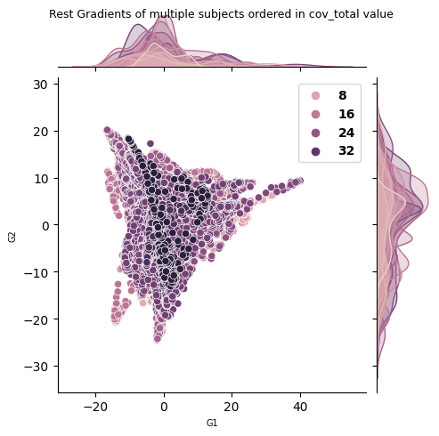
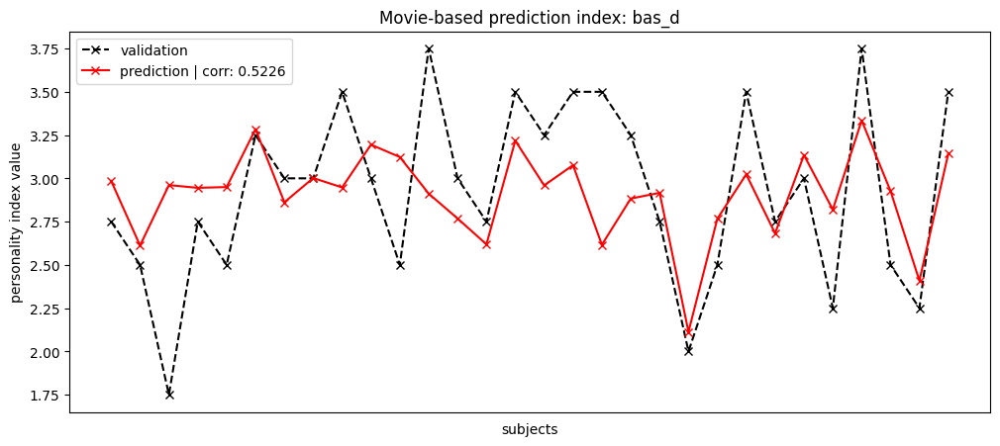
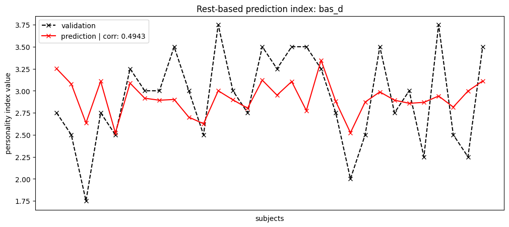
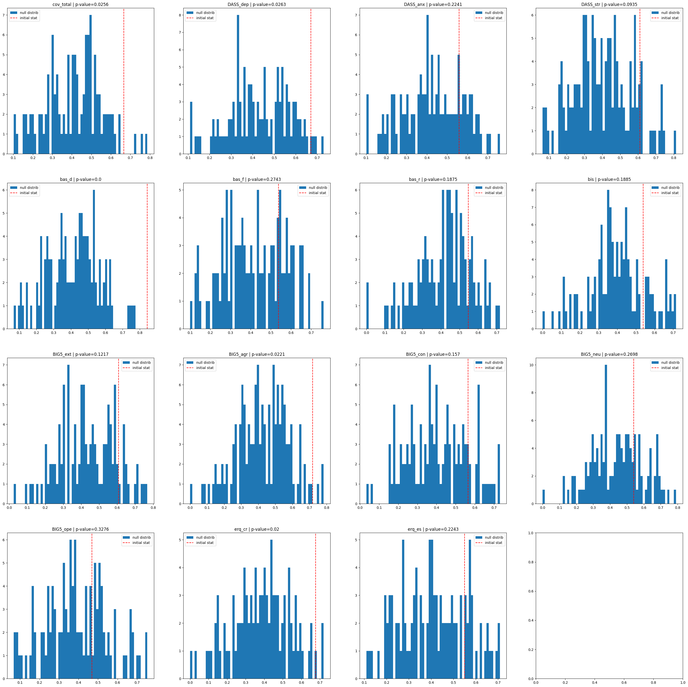
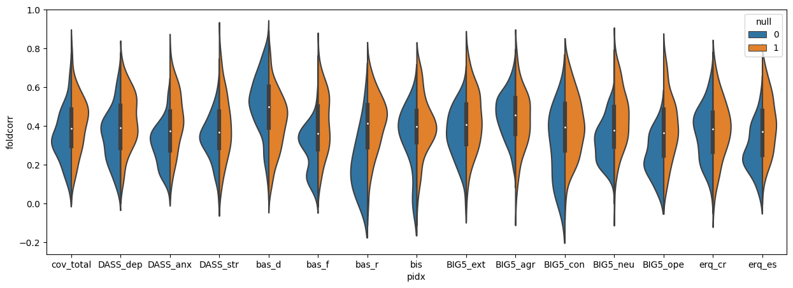
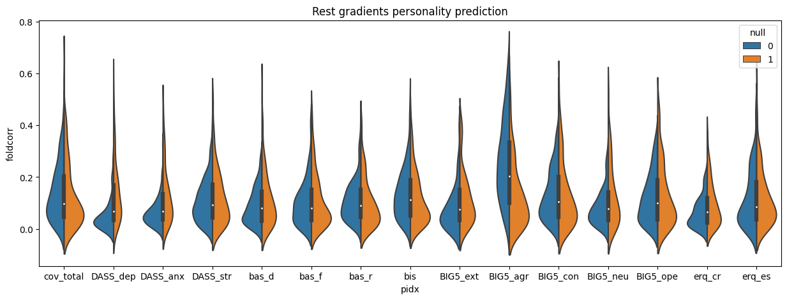
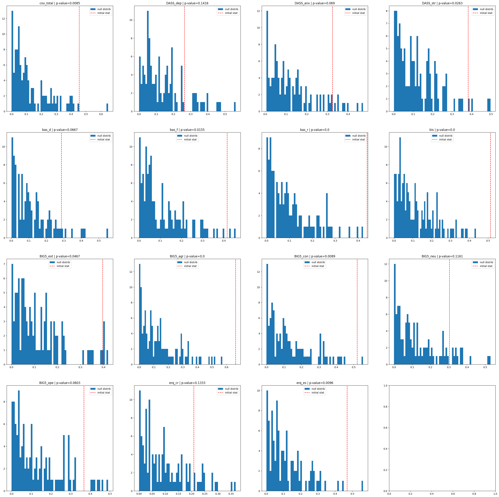

6. Predicting Personality Index
[1]:
from src import *
import warnings
warnings.filterwarnings("ignore")
[2]:
from sklearn.linear_model import Ridge
from sklearn.linear_model import Lasso
from sklearn.metrics import r2_score
Description
We predict personality index from gradients
GOAL: Predicting personality index from gradients
Table of Contents
[3]:
# Loading behavioural scores
behavioural = pd.read_excel('./data/labels/Behavioural_PSY_scored.xlsx')
existing_psy = list(behavioural.columns[-15:])
regions = list(index2region.keys())
print(regions)
['Vis', 'SomMot', 'DorsAttn', 'SalVentAttn', 'Limbic', 'Cont', 'Default', 'Sub']
## On Static Gradients
Visual difference
[4]:
# Loading gradients
subject_grad = load('./resources/static_grad/individual_level/Rest_grad400.pkl')
subjects = list(subject_grad.keys())
subjects = list(subject_grad.keys())
regions = list(index2region.keys())
L = [subject_grad[s][:,:2] for s in subjects]
aligned, _ , score = procrustes_align(L)
subject_grad = {subjects[i]: aligned[i] for i in range(len(subjects))}
feat = existing_psy[0]
psyscore = [behavioural[behavioural.ID == subjects[i]][feat].item() for i in range(len(subjects))]
order = np.argsort(psyscore)
# for Display
G1,G2,coloring = [],[],[]
N, ncoloring = [], []
gradients = np.asarray([subject_grad[s] for s in subjects])
for i in order:
G1 += list(gradients[i][:,0])
G2 += list(gradients[i][:,1])
N.append(np.linalg.norm(gradients[i][:,:2], axis=1))
coloring += [psyscore[i]] * 400
ncoloring.append([psyscore[i]] * 400)
N = np.asarray(N)
ncoloring = np.asarray(ncoloring)
[5]:
tmp_df = {"G1": G1 , "G2": G2, feat: coloring}
ax = sns.jointplot(data=tmp_df, x="G1", y="G2", hue=feat, height=5)
ax.fig.suptitle("Rest Gradients of multiple subjects ordered in {} value".format(feat), size=9)
legend_properties = {'weight':'bold','size':10}
ax.ax_joint.legend(prop=legend_properties,loc='upper right')
ax.ax_joint.set_xlabel('G1', size=7)
ax.ax_joint.set_ylabel('G2', size=7)
[5]:
Text(25.22222222222222, 0.5, 'G2')

[7]:
# correlation of first 5 gradients per parcel value with personality index
gradpsycorr = np.zeros((15,gradients.shape[1]))
for i in range(15):
feat = existing_psy[i]
psyscore = [behavioural[behavioural.ID == subjects[s]][feat].item() for s in range(len(subjects))]
for k in range(gradients.shape[1]):
tmp1 = zscore(gradients[:,k,0])
tmp2 = zscore(np.array(psyscore))
corr = stats.pearsonr(tmp1, tmp2).statistic
gradpsycorr[i][k] = corr
[ ]:
labeling = load_parcellation('schaefer', scale=400, join=True)
surf_lh, surf_rh = load_conte69()
mask = labeling != 0
grad = [None] * 15
for i in range(15):
# map the gradient to the parcels
grad[i] = map_to_labels(gradpsycorr[i], labeling, mask=mask, fill=np.nan)
print('First gradient')
plot_hemispheres(surf_lh, surf_rh, array_name=grad, size=(1000, 2000), cmap='bwr',
color_bar=True, label_text=existing_psy, zoom=1.25, embed_nb=True, interactive=False,
transparent_bg=False)
First gradient
Regress / Predictive
Loadings
[6]:
# Loading REST gradients
subject_grad = load('./resources/static_grad/individual_level/Rest_grad400.pkl')
subjects = list(subject_grad.keys())
subjects_order = list(subject_grad.keys())
regions = list(index2region.keys())
print(subjects_order)
L = [subject_grad[s] for s in subjects_order]
aligned, _ , score = procrustes_align(L, n_iter=10000, tol=1e-10)
gradients_rest = np.asarray(deepcopy(aligned))
# Loading Supermovie gradients
subject_grad = load('./resources/static_grad/individual_level/SUPERMOVIE_grad400.pkl')
L = [subject_grad[s] for s in subjects_order]
aligned, _ , score = procrustes_align(L, n_iter=10000, tol=1e-10)
gradients_movie = np.asarray(deepcopy(aligned))
['S17', 'S02', 'S05', 'S10', 'S11', 'S04', 'S19', 'S03', 'S16', 'S01', 'S14', 'S09', 'S13', 'S06', 'S07', 'S08', 'S15', 'S29', 'S21', 'S26', 'S27', 'S32', 'S20', 'S28', 'S22', 'S25', 'S30', 'S31', 'S24', 'S23']
Model Visualization
[26]:
order_fixed = np.arange(30)
np.random.shuffle(order_fixed)
Movie based prediction
[14]:
# initial statistic
np.random.seed(93)
kfold = 3
lbd, rbd = -5, 1
lambdas_lasso = np.logspace(lbd,rbd,50)
A = gradients_movie.reshape(30,-1)
feat = existing_psy[4]
psyscore = [behavioural[behavioural.ID == subjects_order[s]][feat].item() for s in range(len(subjects_order))]
psyscore = np.array(psyscore)
BP_movie = []
for i in tqdm(range(100)):
results = combination_predict(Lasso, lambdas_lasso, A, psyscore, kfold=kfold, metric='R2', rd_state=i)
BP_movie.append(results)
# null statistic
null_BP_movie = []
for i in tqdm(range(100)):
psyscore = [behavioural[behavioural.ID == subjects_order[s]][feat].item() for s in range(len(subjects_order))]
psyscore = np.array(psyscore)
np.random.shuffle(psyscore)
results = combination_predict(Lasso, lambdas_lasso, A, psyscore, kfold=kfold, metric='R2', rd_state=i)
null_BP_movie.append(results)
[15]:
print("Good R^2 fit on all folds repeats {}".format(np.where((np.asarray(BP_movie)[:,:,0] > 0).sum(axis=1)==3)[0]))
print("Good R^2 fit on all folds repeats {}".format(np.where((np.asarray(null_BP_movie)[:,:,0] > 0).sum(axis=1)==3)[0]))
Good R^2 fit on all folds repeats [ 1 2 3 5 7 9 10 11 12 18 19 21 24 26 28 29 30 31 32 33 36 41 42 43
44 45 46 48 49 50 52 54 57 61 64 67 68 70 73 74 77 79 80 81 82 83 84 86
87 88 92 93 95 96]
Good R^2 fit on all folds repeats [ 2 6 8 9 14 20 42 44 62 76 88]
[32]:
tmp1 = np.concatenate(np.asarray(BP_movie[5])[:,3])
tmp2 = np.concatenate(np.asarray(BP_movie[5])[:,2])
tmp3 = np.concatenate(np.asarray(null_BP_movie[11])[:,3])
tmp4 = np.concatenate(np.asarray(null_BP_movie[11])[:,2])
tmpcorr1 = pearson_correlation(tmp1,tmp2)
tmpcorr2 = pearson_correlation(tmp3,tmp4)
fig = plt.figure(figsize=(12,5))
ax = fig.add_subplot(111)
plt.title('Movie-based prediction index: {}'.format(feat))
plt.plot(tmp1[np.argsort(tmp1)[order_fixed]], '--x', label='validation', c='k')
plt.plot(tmp2[np.argsort(tmp1)[order_fixed]], '-x', label='prediction | corr: {}'.format(round(tmpcorr1,4)), c='r')
# plt.plot(tmp3, '--x', label='validation 2', c='g')
# plt.plot(tmp4, '--x', label='prediction null | corr: {}'.format(round(tmpcorr2,4)))
plt.legend()
ax.set_xticklabels([])
ax.set_xticks([])
ax.set_xlabel('subjects')
ax.set_ylabel('personality index value')
[32]:
Text(0, 0.5, 'personality index value')

Rest based prediction
[11]:
np.random.seed(93)
kfold = 3
lbd, rbd = -5, 1
lambdas_lasso = np.logspace(lbd,rbd,50)
A = gradients_rest.reshape(30,-1)
feat = existing_psy[4]
psyscore = [behavioural[behavioural.ID == subjects_order[s]][feat].item() for s in range(len(subjects_order))]
psyscore = np.array(psyscore)
# initial statistic
BP_rest = []
for i in tqdm(range(100)):
results = combination_predict(Lasso, lambdas_lasso, A, psyscore, kfold=kfold, metric='R2', rd_state=i)
BP_rest.append(results)
# null statistic
null_BP_rest = []
for i in tqdm(range(100)):
psyscore = [behavioural[behavioural.ID == subjects_order[s]][feat].item() for s in range(len(subjects_order))]
psyscore = np.array(psyscore)
np.random.shuffle(psyscore)
results = combination_predict(Lasso, lambdas_lasso, A, psyscore, kfold=kfold, metric='R2', rd_state=i)
null_BP_rest.append(results)
[12]:
print("Good R^2 fit on all folds repeats {}".format(np.where((np.asarray(BP_rest)[:,:,0] > 0).sum(axis=1)==3)[0]))
print("Good R^2 fit on all folds repeats {}".format(np.where((np.asarray(null_BP_rest)[:,:,0] > 0).sum(axis=1)==3)[0]))
Good R^2 fit on all folds repeats [ 5 7 18 19 23 35 41 50 69 86 87]
Good R^2 fit on all folds repeats [ 5 31 56 61 62 65]
[31]:
tmp1 = np.concatenate(np.asarray(BP_rest[87])[:,3])
tmp2 = np.concatenate(np.asarray(BP_rest[87])[:,2])
tmp3 = np.concatenate(np.asarray(null_BP_rest[78])[:,3])
tmp4 = np.concatenate(np.asarray(null_BP_rest[78])[:,2])
tmpcorr1 = pearson_correlation(tmp1,tmp2)
tmpcorr2 = pearson_correlation(tmp3,tmp4)
fig = plt.figure(figsize=(12,5))
ax = fig.add_subplot(111)
plt.title('Rest-based prediction index: {}'.format(feat))
plt.plot(tmp1[np.argsort(tmp1)[order_fixed]], '--x', label='validation', c='k')
plt.plot(tmp2[np.argsort(tmp1)[order_fixed]], '-x', label='prediction | corr: {}'.format(round(tmpcorr1,4)), c='r')
# plt.plot(tmp3, '--x', label='prediction null | corr: {}'.format(round(tmpcorr2,4)))
plt.legend()
ax.set_xticklabels([])
ax.set_xticks([])
ax.set_xlabel('subjects')
ax.set_ylabel('personality index value')
[31]:
Text(0, 0.5, 'personality index value')

[79]:
# save('./resources/tmp_ress/bp_movie.pkl', BP_movie)
# save('./resources/tmp_ress/bp_rest.pkl', BP_rest)
Lasso on Full gradients (3 gradients) with k-fold
[33]:
lbd,rbd = -5,1
lambdas_lasso = np.logspace(lbd,rbd,20)
[34]:
# for k in logsnull.keys():
# print(k)
# print(round(np.nanmean(logsnull[k][0]),3), round(np.nanmean(logs[k][0]),3))
# print(len(logsnull[k][0]), len(logs[k][0]))
# print(round(np.nanmean(logsnull[k][2]),3), round(np.nanmean(logs[k][2]),3))
# print()
[36]:
np.random.seed(10)
logs_movie = {existing_psy[i]: [] for i in range(len(existing_psy))}
logsnull_movie = {existing_psy[i]: [] for i in range(len(existing_psy))}
A = gradients_movie.reshape(30,-1)
for i in tqdm(range(len(existing_psy))):
feat = existing_psy[i]
psyscore = [behavioural[behavioural.ID == subjects_order[s]][feat].item() for s in range(len(subjects_order))]
psyscore = np.array(psyscore)
psyscore = zscore(psyscore)
corr_coef = sample_solution(Lasso, lambdas_lasso, A, psyscore, 2, 200, metric='R2', rd_state=i)
best_res = np.asarray(list(np.asarray(corr_coef)[:,0]))
best_coeffs = np.asarray(list(np.asarray(corr_coef)[:,1]))
best_corrs = np.asarray(list(np.asarray(corr_coef)[:,2]))
logs_movie[feat] = best_res, best_coeffs, best_corrs
corr_coef = sample_solution(Lasso, lambdas_lasso, A, psyscore, 2, 200, null=True, metric='R2', rd_state=i)
best_res = np.asarray(list(np.asarray(corr_coef)[:,0]))
best_coeffs = np.asarray(list(np.asarray(corr_coef)[:,1]))
best_corrs = np.asarray(list(np.asarray(corr_coef)[:,2]))
logsnull_movie[feat] = best_res, best_coeffs, best_corrs
[38]:
row = ['cov_total', 'DASS_dep', 'DASS_anx', 'DASS_str', 'bas_d', 'bas_f', 'bas_r',
'bis', 'BIG5_ext', 'BIG5_agr', 'BIG5_con', 'BIG5_neu', 'BIG5_ope', 'erq_cr', 'erq_es']
pred_distrib = {'pidx': [], 'foldcorr': []}
null_distrib = {'pidx': [], 'foldcorr': []}
for r in row:
folds = logs_movie[r][2]
folds = np.apply_along_axis(lambda x: (x > 0) * x, 0, folds)
folds[folds == 0] = np.nan
folds = np.nan_to_num(folds)
foldsN = logsnull_movie[r][2]
foldsN = np.apply_along_axis(lambda x: (x > 0) * x, 0, foldsN)
foldsN[foldsN == 0] = np.nan
foldsN = np.nan_to_num(foldsN)
pred_distrib['foldcorr'] += list(folds)
pred_distrib['pidx'] += len(folds) * [r]
null_distrib['foldcorr'] += list(foldsN)
null_distrib['pidx'] += len(foldsN) * [r]
pred_distrib = pd.DataFrame.from_dict(pred_distrib)
null_distrib = pd.DataFrame.from_dict(null_distrib)
[39]:
pred_distrib['null'] = 0
null_distrib['null'] = 1
[40]:
fig, ax = plt.subplots(4,4, figsize=(35,35))
pvalues_movie = {}
for i in tqdm(range(len(existing_psy))):
feat = existing_psy[i]
r,c = i //4, i % 4
initial_stat = pred_distrib[pred_distrib.pidx==feat].max()['foldcorr']
ndistrib = null_distrib[null_distrib.pidx==feat]['foldcorr']
nscore = null_score(ndistrib, initial_stat)
pvalues_movie[feat]= round(nscore,4)
ax[r,c].hist(ndistrib, 60, label='null distrib')
ax[r,c].axvline(x = initial_stat, linestyle='--',
color = 'r', label = 'initial stat')
ax[r,c].legend()
ax[r,c].set_title(feat + ' | p-value={}'.format(round(nscore,4)))

[110]:
plt.figure(figsize=(15,5))
sns.violinplot(data=pd.concat([pred_distrib, null_distrib]).reset_index(drop=True),
x="pidx", y="foldcorr", hue="null", split=True)
[110]:
<AxesSubplot:xlabel='pidx', ylabel='foldcorr'>

[41]:
lbd,rbd = -5,1
lambdas_lasso = np.logspace(lbd,rbd,20)
[42]:
np.random.seed(10)
logs_rest = {existing_psy[i]: [] for i in range(len(existing_psy))}
logsnull_rest = {existing_psy[i]: [] for i in range(len(existing_psy))}
A = gradients_rest.reshape(30,-1)
for i in tqdm(range(len(existing_psy))):
feat = existing_psy[i]
psyscore = [behavioural[behavioural.ID == subjects_order[s]][feat].item() for s in range(len(subjects_order))]
psyscore = np.array(psyscore)
psyscore = zscore(psyscore)
corr_coef = sample_solution(Lasso, lambdas_lasso, A, psyscore, 2, 200, metric='R2', rd_state=i)
best_res = np.asarray(list(np.asarray(corr_coef)[:,0]))
best_coeffs = np.asarray(list(np.asarray(corr_coef)[:,1]))
best_corrs = np.asarray(list(np.asarray(corr_coef)[:,2]))
logs_rest[feat] = best_res, best_coeffs, best_corrs
corr_coef = sample_solution(Lasso, lambdas_lasso, A, psyscore, 2, 200, null=True, metric='R2', rd_state=i)
best_res = np.asarray(list(np.asarray(corr_coef)[:,0]))
best_coeffs = np.asarray(list(np.asarray(corr_coef)[:,1]))
best_corrs = np.asarray(list(np.asarray(corr_coef)[:,2]))
logsnull_rest[feat] = best_res, best_coeffs, best_corrs
[43]:
row = ['cov_total', 'DASS_dep', 'DASS_anx', 'DASS_str', 'bas_d', 'bas_f', 'bas_r',
'bis', 'BIG5_ext', 'BIG5_agr', 'BIG5_con', 'BIG5_neu', 'BIG5_ope', 'erq_cr', 'erq_es']
pred_distrib = {'pidx': [], 'foldcorr': []}
null_distrib = {'pidx': [], 'foldcorr': []}
for r in row:
folds = logs_rest[r][0]
folds = np.apply_along_axis(lambda x: (x > 0) * x, 0, folds)
folds[folds == 0] = np.nan
folds = np.nan_to_num(folds)
foldsN = logsnull_rest[r][0]
foldsN = np.apply_along_axis(lambda x: (x > 0) * x, 0, foldsN)
foldsN[foldsN == 0] = np.nan
foldsN = np.nan_to_num(foldsN)
pred_distrib['foldcorr'] += list(folds)
pred_distrib['pidx'] += len(folds) * [r]
null_distrib['foldcorr'] += list(foldsN)
null_distrib['pidx'] += len(foldsN) * [r]
pred_distrib = pd.DataFrame.from_dict(pred_distrib)
null_distrib = pd.DataFrame.from_dict(null_distrib)
[44]:
pred_distrib['null'] = 0
null_distrib['null'] = 1
[178]:
plt.figure(figsize=(15,5))
sns.violinplot(data=pd.concat([pred_distrib, null_distrib]).reset_index(drop=True),
x="pidx", y="foldcorr", hue="null", split=True)
plt.title('Rest gradients personality prediction')
[178]:
Text(0.5, 1.0, 'Rest gradients personality prediction')

[45]:
fig, ax = plt.subplots(4,4, figsize=(35,35))
pvalues_rest = {}
for i in tqdm(range(len(existing_psy))):
feat = existing_psy[i]
r,c = i //4, i % 4
initial_stat = pred_distrib[pred_distrib.pidx==feat].max()['foldcorr']
ndistrib = null_distrib[null_distrib.pidx==feat]['foldcorr']
nscore = null_score(ndistrib, initial_stat)
pvalues_rest[feat]= round(nscore,4)
ax[r,c].hist(ndistrib, 60, label='null distrib')
ax[r,c].axvline(x = initial_stat, linestyle='--',
color = 'r', label = 'initial stat')
ax[r,c].legend()
ax[r,c].set_title(feat + ' | p-value={}'.format(round(nscore,4)))

[46]:
pvalues = {}
for k in pvalues_movie.keys():
tmp1, tmp2 = pvalues_movie[k], pvalues_rest[k]
pvalues[k] = [tmp1,tmp2]
tmp = pd.DataFrame.from_dict(pvalues)
tmp.index = ['film', 'rest']
[61]:
print(tmp.to_latex())
\begin{tabular}{lrrrrrrrrrrrrrrr}
\toprule
{} & cov\_total & DASS\_dep & DASS\_anx & DASS\_str & bas\_d & bas\_f & bas\_r & bis & BIG5\_ext & BIG5\_agr & BIG5\_con & BIG5\_neu & BIG5\_ope & erq\_cr & erq\_es \\
\midrule
film & 0.0256 & 0.0263 & 0.2241 & 0.0935 & 0.0000 & 0.2743 & 0.1875 & 0.1885 & 0.1217 & 0.0221 & 0.1570 & 0.2698 & 0.3276 & 0.0200 & 0.2243 \\
rest & 0.0085 & 0.1416 & 0.0690 & 0.0263 & 0.0667 & 0.0155 & 0.0000 & 0.0000 & 0.0467 & 0.0000 & 0.0089 & 0.1161 & 0.0603 & 0.1333 & 0.0096 \\
\bottomrule
\end{tabular}
[ ]: